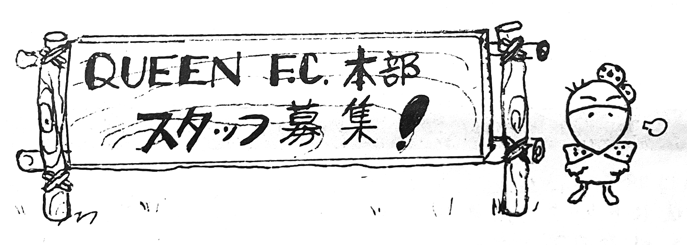

Reflecting its name, Queen Express no. 7 is a newsletter rather than a booklet. Made up of two large double-sided photocopied sheets, it was distributed in mid-April 1975—after the 9th but before Queen arrived in Japan. Most of the newsletter is a Japanese translation of an article that appeared in Disc magazine previously, as this was the only way Japanese fans would be able to read it at the time. There is also a "Free Talk" section with some hearsay and gossip, including erroneous claims that Freddie was of German descent and that his real name was "Freddie Marshall", which was probably just a misheard version of the Japanese transliteration of "Bulsara" (マルシャル→バルサラ). Also noted is that the band supposedly didn't drink much at this point, and were seen guzzling juice while the promoters downed beers.

There is also a notice that Queen Times 4 would be out in late May, with more pages than any of the prior issues, as well as a notice regarding a "rock film screening" event that was coming to Osaka organized by "I AM A BOY" (which was Agi Yuzuru's fashion label at the time), with acts such as T.Rex, Bad Company, Yes, and others. It's noted that the Queen footage at this event would be "new footage" from Pops in Picture.
Lastly, there is also a fan club staff recruitment box, noting that a few staff members would be moving to London in August. Unfortunately, the QFCJ would be defunct by August.